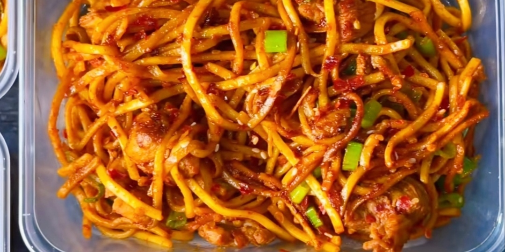

Chilli Garlic Noodles

HIGH PROTEIN MEAL PREP CHILLI GARLIC NOODLES
(330 Cals, 33g Protein, 8g Fat, 30g Carbs per meal).
The ingredients used in this is to make one big meal prep to then portion equally into 5 servings for the week ‼️
Fridge up to 3 days or freeze up to 3 months.
Ingredients
- Garlic
- Chilli flakes
- Chicken
- Noodles
- Minced garlic
- Sesame oil
- Sesame seeds
- Soy sauce
- Sriracha sauce
- Optional Spring onions
Steps
- Add Minced Garlic, Chilli Flakes & 80ml Light Soy Sauce to a bowl.
- Then 600g Raw diced Chicken Breast and mix it all together.
- Pan fry for 10-15 mins on high heat ( or oven / air fry @ 220°C for 15 mins.
- Add the leftover sauce on the pan from cooking the chicken to a separate pan on medium heat‼
- Add a Tablespoon of Sesame Oil.
- 70 ml Light Soy sauce & Teaspoon of Sesame Seeds!!
- Let it simmer and add 750g cooked noodles (roughly 240grams uncooked noodles).
- Followed by minced garlic & your cooked chicken.
- Stir together well and add optional spring onions.
- Add equal portions to your to your meal prep containers.
If you cannot follow the directions or you just want to see the video cooked I have supplied a link
to the Chefs Instagram page below.
Give him a follow if you use Instagram.
I hope you enjoyed this Recipe
Back to Recipes page